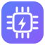

模型留在本地连接更多可能
直连算力舱官方 Ollama 地址（https://ollama-ai.盒子域名），算力舱默认已放行跨域访问。
https://ollama-ai.盒子域名
适用于非默认服务名或多个算力舱，例如 https://f-1420225016421-ollama-ai.你的盒子名.heiyu.space。将直连该地址，需目标服务允许跨域（OLLAMA_ORIGINS）。
https://f-1420225016421-ollama-ai.你的盒子名.heiyu.space
提示：在地址栏加上 ?mock=1 可进入演示模式，无需算力舱即可体验全部功能。
?mock=1